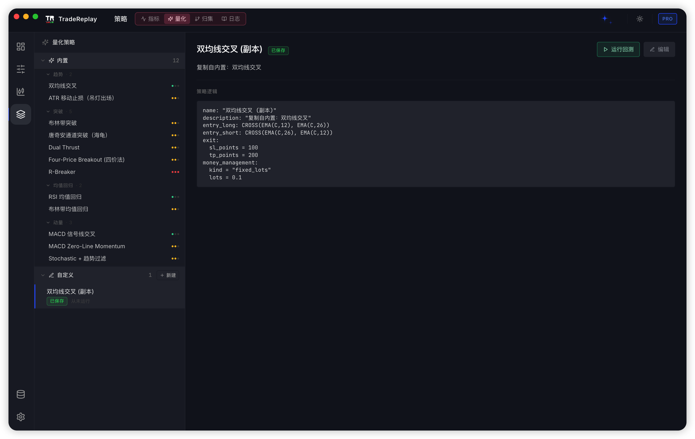
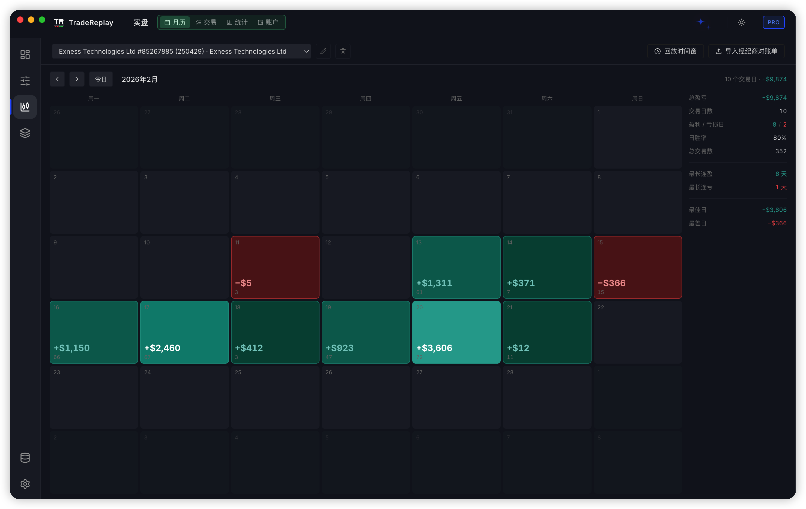
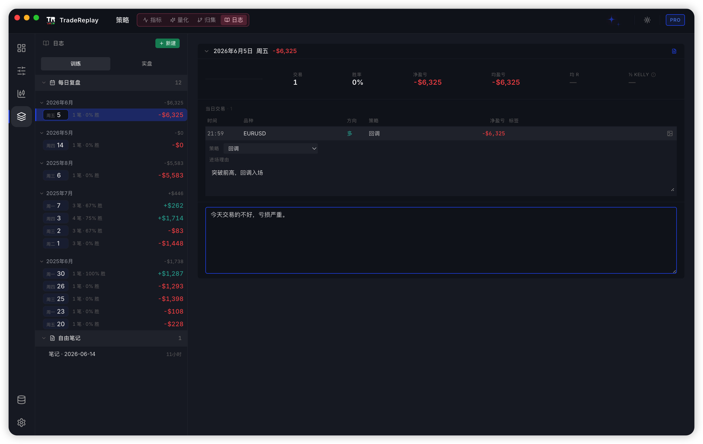
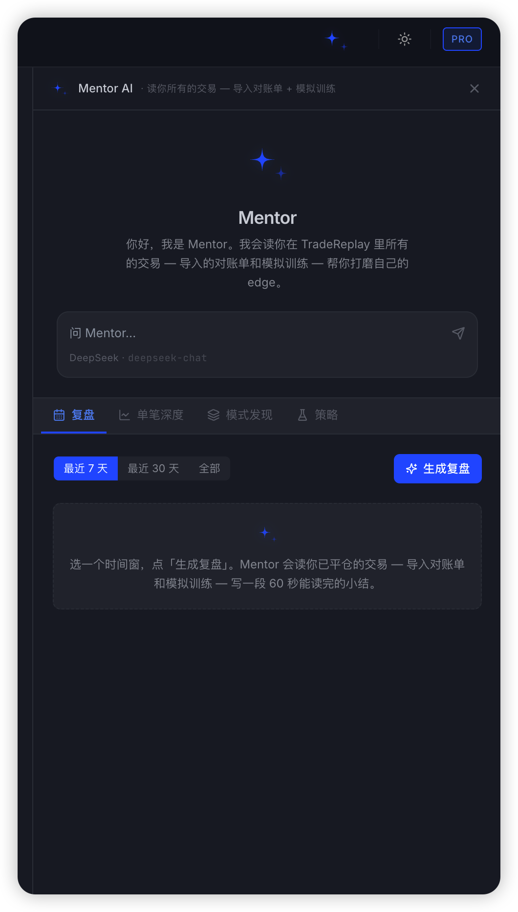

01 / 03
每次下单前，把规则逐项过一遍
客观条件自动核对，主观条件保留给你判断。每次确认都会进入交易记录，复盘时能看见当时是否真正遵守系统。
- 结构化、公式化与主观条件共存
- 必守规则与参考规则分开
- 每笔交易保存系统版本
从方法到证据
不是把规则写在笔记里，而是让同一套系统真实运行在训练、回测和实盘记录中。
入场、风险、出场、禁做条件
让主观判断与客观规则协同运行
训练、回测与真实账单
分清系统问题与执行偏差
同一套规则，三种运行方式
根据规则的客观程度选择运行方式，系统本身不必重写。
01 / 03
客观条件自动核对，主观条件保留给你判断。每次确认都会进入交易记录，复盘时能看见当时是否真正遵守系统。
02 / 03
软件逐根扫描客观条件，找到信号后高亮位置、暂停播放，并把剩余主观判断清单交给你。
03 / 03
当入场、仓位、风险和出场都能执行时，让软件跑完整段历史，再回到每一笔成交检查结果。
六个栏目，一个闭环
每个栏目只解决一个清晰问题，合在一起形成从规则到改进的完整工作流。
01 / 06

02 / 06

03 / 06

04 / 06

05 / 06

06 / 06

购买与下载
免费版无需注册账户。专业版为桌面端一次买断许可，国内通过淘宝购买，国际版将在 Whop 上线。
中国区 · 已开放
一次买断最多 2 台设备
国际版 · 准备中
待上线1 年授权 · 2 台设备
v1.52.0 · 2026-07-27
核心数据库保存在你的电脑上。
教程与售后
从下载安装到定制系统、回测与 Mentor AI，按步骤上手；购买后可加入售后群。